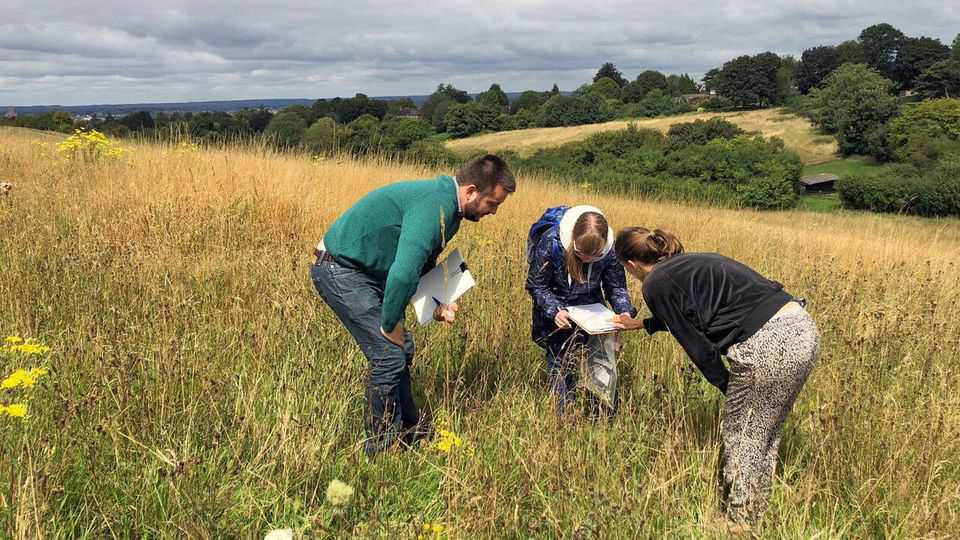
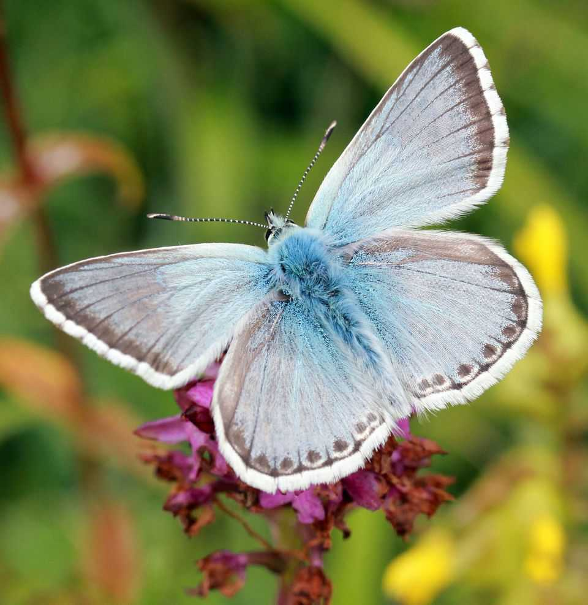
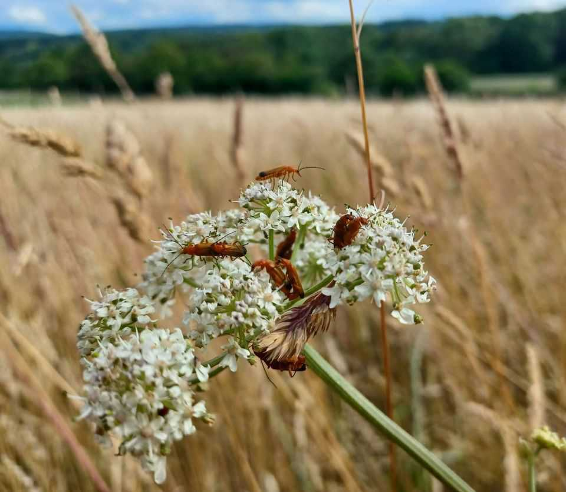

Conservationists are building highways for bugs
Britain makes a beeline for insect recovery

Oct 8th 2026
To the uninitiated, the patch of yellowish grass could be any other parched field in Surrey. Yet Cowslip Meadow is a site of special scientific interest. It sits on the chalky slopes of the North Downs, a species-rich grassland. Here a mix of herbs and flowers feeds a mix of insects. If you know what you are looking for, you can easily spot a rufous grasshopper or an adonis blue butterfly in the vetch. And where there are plenty of insects there are plenty of mice. A kestrel hovers hopefully overhead, trying to catch one.
Meadows like Cowslip are scarce. Since the 1930s more than 97% of Britain’s species-rich grassland has vanished. Most has been turned into a protein-rich grass monoculture that is good for fattening livestock but anathema to insects.
Britain’s insect population has been shrinking for decades, ever since farms began expanding and using synthetic pesticides in the 1950s. Since 2021 the number of flying insects has fallen by 63%. This has been bad for the mice and birds that eat them but also for farmers. Insects pollinate plants, break down dung and keep pests at bay. Their loss makes growing food harder.

If insects could move between habitats, they might fare better. When habitats are fragmented, “habitat loss becomes a sort of a spiral of doom,” says Paul Hetherington of Buglife, a charity. Insects cannot escape conditions that may no longer allow them to survive and reproduce. “You lose everything.”
Buglife has spent a decade collecting data on habitats so that they might be joined up. “B-lines” are imaginary paths criss-crossing the country like superhighways for bugs. So far more than 5,300 hectares of a planned 150,000 have been filled with flowers and grasses for pollinators. Sea-aster mining bees have since been sighted in Essex, and wormwood moonshiners have been found in the Brecklands.
In June conservationists finished filling in the pollinator patches in Surrey. Some 60 hectares have been restored across vineyards, churchyards and gardens. A bug highway now runs between Cowslip Meadow and the Quarry Hangers, another nature reserve.

There Buglife teamed up with Surrey Wildlife Trust and the University of Surrey in a three-year project called Space4Nature. Citizen scientists surveyed the county’s flora and fauna, while researchers pulled high-resolution habitat imagery from satellites. The data were then used to train a machine-learning model to predict grassland types. The tool, once rolled out, will help identify and connect habitats more quickly and cheaply.
Buglife has also begun working with Noé, a French conservation charity, to map France, and with the European Commission, too, to map the rest of Europe. With luck, a lot more insects will soon be able to get from A to Bee. ■